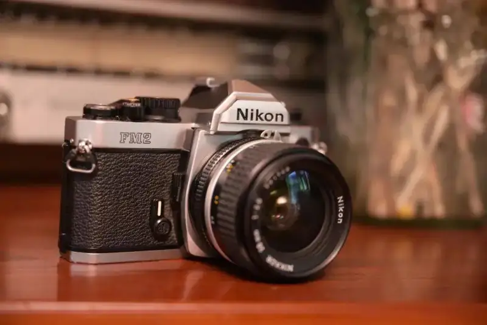

Photographer Yuan Shang Yunjian
Commercial still-life and architectural photographer
The history of photography runs alongside advancing technology, keeping fragments of history and visual art before our eyes for a long time. As film imagery makes a comeback in this digital age, photographers and enthusiasts can experience the visual charm of different media. The retro camera look, the unique tone of film, and the camera settings that require you to take part in every step let those of us used to digital feel the different experience that film shooting brings.

I am the photographer Yuan Shang Yunjian. My professional study of imagery taught me many ways of recording, and the mystery of film shooting has always kept a strong hold on me. With a traditional mechanical film camera, every step needs careful calculation, like writing with a brush. From choosing the paper and grinding the ink to writing the finished text, that pleasure is not something you get from simply tapping a keyboard. Along with my love of film photography, my Nikon FM2 also makes my shooting process fuller.
The Nikon FM2 is not only one of the fully mechanical cameras with the longest sales life,but with its fine build, high reliability, low failure rate, and strong impact resistance, it became a very popular classic model in the 1980s and 1990s.The FM2 also has a fast shutter of 1/4000 second. With this strong performance, it became the main camera of many famous photographers.
In 1984, the photographer Steve McCurry shot a photo called Afghan Girl on Kodachrome film with a Nikon FM2 and a Nikkor Auto 105mm f/2.5 lens. It became an iconic image. It was exactly my teacher's explanation in college that made me fall deeply in love with this Nikon FM2 through that photo.
This fully manual FM2 has clear traits. Its high-looking design, together with Nikon's rich manual lens lineup, gives photographers great versatility and playability. Its all-mechanical structure and full manual operation let the FM2 handle more complex conditions. It shoots normally in freezing cold or in the hot damp of summer, because an all-mechanical body simply has no dead battery or overheating crash like a digital camera.
The real joy of a manual camera is that you complete every step yourself. From preparing the film before the shoot, where different creative needs call for different color or black-and-white films and different ISO ratings, to choosing the manual lens of a certain focal length, all of it decides whether the shoot succeeds.
In the actual shooting stage, from loading and advancing the film to using a light meter for exposure, then setting the aperture, focusing manually, pressing the shutter, and hearing the click, the shot is done. Every step needs careful work. One slip, and a great frame slips away. This makes me approach each work more rigorously and value every frame about to be exposed. The many steps also slow the shooting rate, but that slower pace lets me better feel the joy of photography and the beauty in front of me.
Finishing the shoot with a film camera is not really the end of the work. When you press the FM2's rewind button and manually wind the film back into the canister, the next stage of film shooting begins: the development process. Developing black-and-white film is relatively simple, and a photographer can do it alone. Color film sent to a lab leaves only anticipation and nerves. Whatever the final result, this experience adds to the charm of film photography and makes many photographers devoted to it.
The fun of film photography is more than I can describe in a few words. In the fast, high-quality digital age, the FM2 brings a slow-paced imaging experience, giving Nikon users a richer creative experience. Whether you shoot film with the FM2 or create with Nikon's Z-mirrorless system, Nikon gives photographers more imaging pleasure, so we can record our own colorful moments.